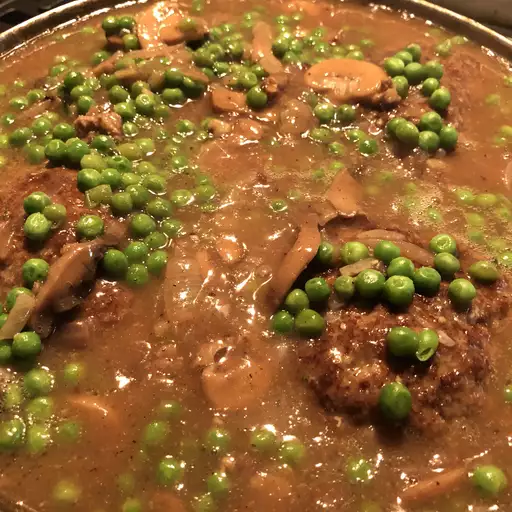

Midwest Salisbury Steak


Nutrition Facts (per serving)
| 421 |
Calories |
| 20g |
Fat |
| 27g |
Carbs |
| 33g |
Protein |
| Prep Time: |
10 mins |
| Cook Time: |
50 mins |
| Total Time: |
1 hr |
| Servings: |
5 |
| Nutrition Details |
|
Servings Per Recipe:
5
|
|
Calories:
421
|
| % Daily Value * |
|
Total Fat
20g
|
26%
|
|
Saturated Fat
9g
|
46%
|
|
Cholesterol
137mg
|
46%
|
|
Sodium
848mg
|
37%
|
|
Total Carbohydrate
27g
|
10%
|
|
Dietary Fiber
3g
|
12%
|
|
Total Sugars
7g
|
|
Protein
33g
|
67%
|
|
Vitamin C
7mg
|
8%
|
|
Calcium
88mg
|
7%
|
|
Iron
5mg
|
30%
|
|
Potassium
960mg
|
20%
|
This recipe for Salisbury steak uses good quality ground sirloin and tastes wonderful. You won't have to drain any grease from the patties once they've browned.
Serve over mashed potatoes, egg noodles, or rice. Simply delightful!
Patties:
- 1 pound ground sirloin
- ½ cup panko bread crumbs
- 1 egg, beaten
- 2 tablespoons milk
- ½ (1 ounce) package dry onion soup mix
- 1 teaspoon Worcestershire sauce
- ¼ teaspoon ground black pepper
Gravy:
- 3 tablespoons butter
- 2 cups fresh mushrooms, sliced
- 1 sweet onion, sliced
- 3 tablespoons all-purpose flour
- ½ (1 ounce) package dry onion soup mix
- 1 ½ cups beef stock
- 1 cup water
- salt and ground black pepper to taste
- Gather the ingredients.
- Make the patties: Mix ground sirloin, panko bread crumbs, egg, milk, 1/2 packet onion soup mix, Worcestershire sauce, and black pepper together in a large bowl; shape into 5 patties
- Heat a skillet over medium heat. Cook patties in the hot skillet until browned, 3 to 5 minutes per side.
- Make the gravy: Melt butter in a separate skillet over medium-high heat. Sauté mushrooms and onion in melted butter until tender, about 5 minutes. Stir flour and remaining 1/2 packet onion soup mix into mushroom mixture until combined.
- Gradually add beef stock and water, stirring continually, until simmering. Reduce heat to medium; cook, stirring frequently, until gravy has thickened, about 4 to 5 minutes. Season with salt and pepper.
- Place browned patties into gravy; simmer until very tender, about 30 minutes. An instant-read thermometer inserted into the center should read 160 degrees F (70 degrees C).
<--- Back to recipes